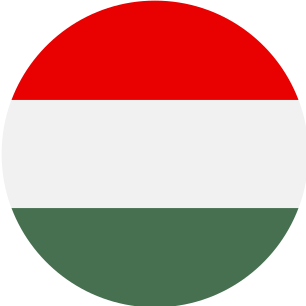

Jaskyne Aggteleckého krasu

Jaskyne Slovenského krasu
Ochtinská aragonitová jaskyňa
Dobšínska ľadová jaskyňa
Domica
Gombasecká jaskyňa
Jasovská jaskyňa
Krásnohorská jaskyňa
Silická ľadnica
Vyber si jaskyňu